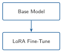
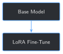
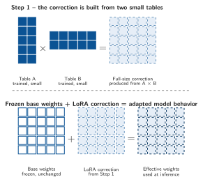
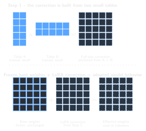
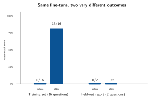
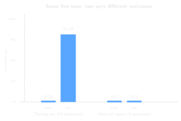

import torch
def build_training_ids(tokenizer, example: dict) -> tuple[torch.Tensor, torch.Tensor]:
user_message = f"{example['instruction']}\n{example['input']}"
prompt_only = tokenizer.apply_chat_template(
[{"role": "user", "content": user_message}], tokenize=False, add_generation_prompt=True
)
full_text = tokenizer.apply_chat_template(
[
{"role": "user", "content": user_message},
{"role": "assistant", "content": example["output"]},
],
tokenize=False,
add_generation_prompt=False,
)
prompt_ids = tokenizer(prompt_only, return_tensors="pt", add_special_tokens=False)["input_ids"]
full_ids = tokenizer(full_text, return_tensors="pt", add_special_tokens=False)["input_ids"]
labels = full_ids.clone()
labels[:, : prompt_ids.shape[1]] = -100
return full_ids, labels
input_ids, labels = build_training_ids(tokenizer, examples[0])
print(f"Full sequence: {input_ids.shape[1]} tokens, {int((labels[0] == -100).sum())} masked (prompt)")5 Your First LoRA Fine-Tune


Progress █████░░░░░░░░ 5 / 13 · Estimated time: 45-60 min · Difficulty: 🟠 Intermediate
5.1 Learning objectives
By the end of this chapter, you will be able to:
- Explain what a LoRA adapter is: a small set of extra weights trained on top of a frozen base model, not a rewrite of the model itself
- Fine-tune the base model on Chapter 2’s 16 training examples with a plain PyTorch training loop — no framework magic hidden from you
- Rerun Chapter 3’s training baseline against your fine-tuned model and measure a real, honest improvement
- Run, for the first time in this book, a held-out generalization check against Chapter 2’s reserved report — and explain, from a real run, exactly how the fine-tuned model fails on it
5.2 Operational Problem
Mike, the completions engineer, has watched this book build up evidence for four chapters — the base model doesn’t know this well’s vocabulary, doesn’t know its specific reports, and its embeddings don’t already understand the shorthand. He’s ready for the payoff, but wary of a different failure: “If we fine-tune this on sixteen examples, are we teaching it our operation — or just teaching it to repeat sixteen sentences back at us?”
That’s exactly the right question, and this chapter answers it two ways, not one. It fine-tunes the base model on Chapter 2’s 16 training examples, then checks both whether it learned those exact examples (training recall) and whether that learning transfers to a report it never saw during training (generalization, using Chapter 2’s reserved Drilling_037). Chapter 3 already scored the base model 0/16 and 0/2 on both. This chapter reruns that exact same harness against the fine-tuned model — same questions, same scoring, same code — so the comparison means something.
5.3 Example: what the model actually trains on
Fine-tuning doesn’t feed the model instruction/input/output dictionaries directly — it feeds it the same chat-formatted text Chapter 1’s generate_reply builds, except this time with the correct answer appended as the assistant’s turn:
NoteWhat one training example looks like, chat-formatted
<|im_start|>system
You are Qwen, created by Alibaba Cloud. You are a helpful assistant.<|im_end|>
<|im_start|>user
What are the present operations reported on this well?
Well: FORGE 16A [78]-32 | Report #3 | Date: 2020-10-22<|im_end|>
<|im_start|>assistant
RIGGING UP WITH FRONTIER CREWS AND SUPERVISION AND JW JONES TRUCKING<|im_end|>Fine-tuning’s whole job is to adjust the model so that, given the system and user turns above, it becomes more likely to produce that exact assistant turn — and nothing else changes about how the model reads or generates text.
5.4 Theory
TipEngineering Translation: LoRA adapter
LoRA stands for Low-Rank Adaptation. Full fine-tuning would mean updating all 1.5 billion of the base model’s numbers. A LoRA adapter is a small, separate set of numbers — a correction that gets trained instead, while the original 1.5 billion stay frozen, untouched. LoRA does not replace the base model’s weights: at inference time the model reads its usual weights and this correction, added on top, together — as if the correction had been written directly into the model, without the original numbers ever having changed.
“Low-rank” describes how that correction stays small: instead of training one full table of correction numbers — one for every connection in the layer — LoRA trains two much smaller tables. Multiply those two tables together and you get a full-size correction, the same shape as the layer it’s correcting, without needing to store that full-size version separately. How narrow those two tables are is the adapter’s rank (r=8 in Step 2 below) — small by design. Fewer numbers to store and train, at the cost of only approximating what a full-size correction could do.


TipEngineering Translation: epoch and loss
One epoch is one full pass through the training data — all 16 examples, once. Loss is a single number measuring how wrong the model’s predictions were on that pass; it should generally fall as training continues, the way a golf score should generally fall as you improve. Chapter 11 covers proper evaluation metrics; loss here is just a training-time signal, not a measure of correctness by itself.
Why more than one pass? Each pass only nudges the adapter’s weights a small amount toward the correct answers — like tightening a connection in small, controlled turns instead of one big one, so it doesn’t overshoot. One epoch barely moves the model; this chapter runs 20 so those small nudges can actually accumulate into something. The loss numbers in Step 3 (4.7173 on epoch 1, falling to 0.1201 by epoch 20) are the visible trace of that accumulation.
TipEngineering Translation: training recall vs. generalization
Training recall is how well the model reproduces the exact examples it trained on — an open-book test where it already saw the answer key. Generalization is how well it does on something it never saw — the real test of whether it learned anything transferable. A model can score perfectly on the first and close to zero on the second; Chapter 3 built the held-out check specifically to catch that gap.
5.5 Why LoRA instead of updating the whole model?
A full fine-tune — updating all 1.5 billion parameters — is a reasonable thing to want: more of the model can adapt, in principle. It’s a much harder thing to actually run: 1.5 billion trainable parameters means 1.5 billion optimizer states to keep in memory, and a saved checkpoint the same multi-gigabyte size as the base model itself, for every fine-tune you ever run. LoRA trains a small fraction of that — for this chapter’s setup, about 0.14% of the model’s parameters — and saves a corresponding adapter file measured in megabytes, not gigabytes. You’ll see the exact numbers for both in Step 2.
5.6 Implementation
5.6.1 Step 1: Format a training example and mask the prompt out of the loss
5.7 What problem are we solving?
The model shouldn’t be trained to predict the question — only the answer. This step builds the full chat-formatted text for one example, then marks every token before the assistant’s turn as “don’t compute loss here.”
5.8 Inputs
- The tokenizer loaded in Chapter 1
- One training example (
instruction,input,output)
5.9 Expected Output
Two tensors of matching shape: the full token sequence, and a labels tensor where the prompt portion is replaced with -100 (PyTorch’s “ignore this position” marker for loss computation).
Running this exact code prints:
Full sequence: 92 tokens, 71 masked (prompt)5.10 What just happened?
92 tokens make up the full chat-formatted example; the first 71 — everything through <|im_start|>assistant — are masked out of the loss, leaving only the 21 tokens of the actual answer for the model to be trained on. This is the same masking idea Chapter 3’s baseline used in reverse: there, the answer was hidden from the model at inference time; here, everything except the answer is hidden from the loss at training time.
5.11 Production Reality
Real fine-tuning pipelines batch many examples together with padding, not one at a time — Chapter 7 covers formatting and chunking training data at scale. This chapter keeps it to one example per step deliberately, so every line of the training loop in Step 3 stays easy to read and reason about.
5.11.1 Step 2: Wrap the base model with a LoRA adapter
5.12 What problem are we solving?
Turn the frozen base model into one with a small, trainable adapter attached — everything else about the model stays exactly as Chapter 1 loaded it.
5.13 Inputs
- The loaded
modelfrom Chapter 1 - A
LoraConfignaming which layers get an adapter
5.14 Expected Output
A wrapped model, plus a printed count of how many parameters are actually trainable.
from peft import LoraConfig, TaskType, get_peft_model
LORA_CONFIG = LoraConfig(
r=8,
lora_alpha=16,
lora_dropout=0.05,
target_modules=["q_proj", "k_proj", "v_proj", "o_proj"],
task_type=TaskType.CAUSAL_LM,
)
lora_model = get_peft_model(model, LORA_CONFIG)
lora_model.print_trainable_parameters()Running this exact code prints:
trainable params: 2,179,072 || all params: 1,545,893,376 || trainable%: 0.14105.15 What just happened?
target_modules names the specific weight matrices inside each attention layer that get a LoRA adapter attached — q_proj/k_proj/v_proj/o_proj are the query, key, value, and output projections every attention layer has. r=8 sets the adapter’s size (its “rank” — a small number by design). The result: 2,179,072 trainable parameters out of 1,545,893,376 total — 0.141%. Everything else in the model is frozen and will never change during this chapter’s training.
5.16 Production Reality
target_modules and r are real hyperparameters a production fine-tuning pipeline would sweep, not fix once — different layers targeted, or a larger rank, trade off adapter size against how much the model can actually learn. This chapter’s challenge exercise tries a smaller target_modules list and shows the real effect on results.
One more deliberate choice, worth naming directly: this chapter’s training loop runs entirely on CPU, the same as Chapter 1’s default. A GPU or Apple Silicon (MPS) machine can fine-tune this faster, but this book keeps every reader’s numbers reproducible against the same baseline rather than depending on whichever accelerator a given machine happens to have. If you have a GPU and want to try it, model.to("cuda") (or "mps") before Step 2, and moving input_ids/labels in build_training_ids to the same device, is the change — the rest of this chapter’s logic doesn’t depend on which device it runs on.
5.16.1 Step 3: Fine-tune, then measure recall and generalization
5.17 What problem are we solving?
Actually train the adapter on Chapter 2’s 16 examples, then answer Mike’s question with numbers: did the model learn these exact examples, and separately, did anything transfer to a report it never saw?
5.18 Inputs
- The wrapped
lora_modelfrom Step 2 - Chapter 2’s 16 training examples, and its held-out report’s 2 examples
- Chapter 3’s
run_baselineharness, reused unchanged
5.19 Expected Output
A loss that falls across 20 epochs, then two before/after score comparisons.
def fine_tune(lora_model, tokenizer, examples: list[dict], num_epochs: int = 20) -> None:
lora_model.train()
optimizer = torch.optim.AdamW(lora_model.parameters(), lr=2e-4)
for epoch in range(num_epochs):
epoch_loss = 0.0
for example in examples:
input_ids, labels = build_training_ids(tokenizer, example)
loss = lora_model(input_ids=input_ids, labels=labels).loss
loss.backward()
optimizer.step()
optimizer.zero_grad()
epoch_loss += loss.item()
if (epoch + 1) % 5 == 0 or epoch == 0:
print(f" epoch {epoch + 1}/{num_epochs}: avg loss {epoch_loss / len(examples):.4f}")
lora_model.eval()
def score(results: list[dict]) -> tuple[int, int]:
return sum(r["matched_expected"] for r in results), len(results)
print("Before fine-tuning:")
print(f" Training baseline: {score(run_baseline(model, tokenizer, examples))}")
print(f" Held-out baseline: {score(run_baseline(model, tokenizer, held_out_examples))}")
fine_tune(lora_model, tokenizer, examples)
print("After fine-tuning:")
print(f" Training recall: {score(run_baseline(lora_model, tokenizer, examples))}")
print(f" Held-out generalization: {score(run_baseline(lora_model, tokenizer, held_out_examples))}")Running this exact code prints:
Before fine-tuning:
Training baseline: 0/16
Held-out baseline: 0/2
epoch 1/20: avg loss 4.7173
epoch 5/20: avg loss 1.2688
epoch 10/20: avg loss 0.3360
epoch 15/20: avg loss 0.1850
epoch 20/20: avg loss 0.1201
After fine-tuning:
Training recall: 13/16
Held-out generalization: 0/25.20 What just happened?


Be precise about what this run actually shows: fine-tuning changed the model, not simply “improved” it. Training recall jumped from 0/16 to 13/16 — real, measurable learning, not a training artifact. Held-out generalization stayed at 0/2, exactly where it started. Sixteen examples was enough for this small model to memorize sixteen answers; it was not enough to teach it anything that transfers to a report it never saw. That’s not a bug — it’s the honest, predictable result of a training set this size, and precisely why Chapter 2 reserved that report in the first place.
Of the 18 total questions across both checks (16 training + 2 held-out), 13 training answers came back right, which leaves 5 wrong — 3 from the training set, 2 from the held-out report. Looking at which answers came back wrong is more revealing than the scores alone. Every one of those 5 is a real answer from a different report, borrowed wholesale — never an invented guess:
| Question | Expected | Model said | Actually belongs to |
|---|---|---|---|
| Report #3, activity planned | CONTINUE RIGGING UP... |
CONTINUE BUILDING CURVE TO 65° |
Report #36 |
| Report #36, present ops | BUILDING CURVE SECTION... |
PIPE FREE, TRIP OUT OF HOLE... |
Report #38 |
| Report #48, present ops | LAYING DOWN COOLING BHA 31 |
CIRCULATE FOR TEMPERATURE |
Report #49 |
| Report #37 (held-out), present ops | RIG UP SCHLUMBERGER... |
PIPE FREE, TRIP OUT OF HOLE... |
Report #38 |
| Report #37 (held-out), activity planned | RUN UBI LOG... |
CONTINUE BUILDING CURVE TO 65° |
Report #36 |
The fine-tuned model didn’t get vaguer or more hesitant on questions it couldn’t answer — the way the honest, ungrounded base model did back in Chapter 3. It got more confident, and confidently wrong, reaching for the nearest memorized answer instead. That’s a materially worse failure mode for a production system than “I don’t know,” and it’s the direct consequence of training on too little, too narrow a dataset.
The principle behind all three results together: a tiny fine-tune can teach a model to prefer the shape of your archive — its vocabulary, its formatting, the fact that answers are short, well-specific field values — without teaching it reliable judgment over reports it hasn’t seen. Shape is real and worth having. It is not the same thing as judgment, and this chapter’s numbers are exactly what the difference looks like.
5.21 Practical exercise
🟢 Beginner
Try it yourself: run python code/chapter_05/first_lora_finetune.py from inside book/ (it takes about 5 minutes on CPU) and watch the loss fall across the 20 epochs.
You’ll know it worked when: you see Training recall: 13/16 and Held-out generalization: 0/2 — and you can explain, in one sentence, why those two numbers moving so differently is exactly the point.
5.22 Field notes
WarningField notes: wrong, but never randomly wrong
Query: every one of this chapter’s 5 wrong answers (3 training misses, both held-out misses), collected as a set.
Result: all 5 are word-for-word answers that belong to other real reports in the training set — "PIPE FREE, TRIP OUT OF HOLE FOR BHA INSPECTION" (really report #38’s answer) shows up twice, once for report #36’s question and once for the held-out report #37’s question.
Why: with only 16 examples and 20 epochs of repetition, the model learned a shortcut: produce something that looks like a report answer from this well, without reliably learning which answer belongs to which specific report. Its confusion isn’t noise — it consistently reaches for one of a small set of memorized, real sentences.
Lesson: a fine-tuned model’s mistakes are diagnostic. Random gibberish would suggest something broken in training; consistently borrowed real answers point specifically at “not enough distinct training signal to tell reports apart” — exactly what Chapter 6’s data quality gate and Chapter 7’s richer training examples exist to fix.
5.23 Challenge exercise
🟠 Intermediate
Challenge: Step 2 targets all four attention projections (q_proj, k_proj, v_proj, o_proj). A more common minimal LoRA setup only targets q_proj and v_proj. Rerun fine-tuning with that lighter config and see whether training recall changes. A reference solution is at code/chapter_05/challenge/challenge.py — on a real run, it trains 1,089,536 parameters (0.0705%, about half of this chapter’s setup) and scores 10/16 training recall, down from 13/16.
5.24 Key takeaways
- A LoRA adapter trains a small fraction of a model’s parameters (here,
0.141%) while the rest stay frozen — a real fine-tune, not a simulation of one, at a fraction of full fine-tuning’s cost. - Training recall and generalization are different claims that need different evidence. This chapter’s model aced the first (
0/16→13/16) and made zero progress on the second (0/2→0/2), on the exact same fine-tune. - A fine-tuned model’s wrong answers are worth reading, not just counting. Every miss here was a real, memorized answer from a different report — evidence of a specific, fixable data problem, not random model failure.
- Sixteen examples is enough to prove fine-tuning works mechanically. It is deliberately not enough to teach real operational judgment — that’s what Part II’s larger, higher-quality training sets are for.
5.25 Repository files
| File | Purpose |
|---|---|
code/chapter_05/first_lora_finetune.py |
Fine-tunes a LoRA adapter on Chapter 2’s training examples and reports training/held-out scores |
code/chapter_05/challenge/challenge.py |
Reference solution: a lighter q_proj/v_proj-only LoRA config |
checkpoints/chapter_05_lora/ |
Generated adapter (not committed — regenerate by running the script) |
notebooks/chapter_05_explore.ipynb |
Interactive companion notebook |
CautionCHECKPOINT — Chapter 5
Tip✓ WHAT YOU BUILT
first_lora_finetune.py — trains a LoRA adapter on Chapter 2’s 16 examples and saves it to checkpoints/chapter_05_lora/ (about 8 MB, next to the base model’s ~2.9 GB of weights on disk). Reruns Chapter 3’s exact baseline harness before and after, against both the training set and the held-out report, so the comparison is honest and reproducible.
5.26 What can you do now that you couldn’t do before?
You can fine-tune a real language model on your own data and produce real, measurable evidence of what it learned — and, just as importantly, honest evidence of what it didn’t, instead of assuming a falling loss number means the job is done.
5.27 Suggested next step
Coming up in Chapter 6: this chapter’s fine-tune worked exactly as a 16-example, single-well dataset should: real memorization, no generalization. The obvious next move is more data — but simply pointing this same pipeline at hundreds of reports, without checking them first, would just memorize more inconsistencies faster. Chapter 6 builds a data quality gate: the checks a training set needs to pass before it’s trusted at the scale Part II is about to introduce.